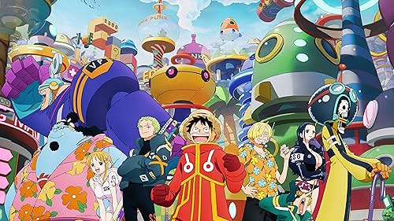

A continuación se mostrara un listado con mis animes favoritos de todos los tiempos. Cabe aclarar que esto no significa que son los mejores animes del mundo ni nada por el estilo, nada mas lejos de la realidad, este listado solo muestra mis animes favoritos asi que tu puedes tener tus preferencias que pueden estar en desacuerdo con la siguiente lista y eso esta bien.
- Katekyo Hitman Reborn!
- Hajime no Ippo
- Fullmetal Alchemist - Brotherhood
- One Piece 
- Tengen Toppa: Gurren Lagann